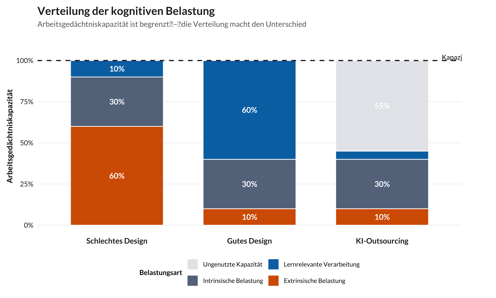

cognitive_load_data <- tibble(
scenario = factor(
rep(c("Schlechtes Design", "Gutes Design", "KI-Outsourcing"), each = 4),
levels = c("Schlechtes Design", "Gutes Design", "KI-Outsourcing")
),
load_type = factor(
rep(c("Extrinsische Belastung", "Intrinsische Belastung",
"Lernrelevante Verarbeitung", "Ungenutzte Kapazität"), 3),
levels = c("Ungenutzte Kapazität", "Lernrelevante Verarbeitung",
"Intrinsische Belastung", "Extrinsische Belastung")
),
percentage = c(
60, 30, 10, 0,
10, 30, 60, 0,
10, 30, 5, 55
)
) |>
filter(percentage > 0) |>
group_by(scenario) |>
mutate(
y_pos = cumsum(percentage) - percentage / 2,
label = if_else(percentage >= 8, paste0(percentage, "%"), "")
) |>
ungroup()
load_colors <- c(
"Intrinsische Belastung" = "#64748b",
"Extrinsische Belastung" = "#dc2626",
"Lernrelevante Verarbeitung" = "#16a34a",
"Ungenutzte Kapazität" = "#e5e7eb"
)
ggplot(cognitive_load_data, aes(x = scenario, y = percentage, fill = load_type)) +
geom_col(width = 0.7, color = "white", linewidth = 0.5) +
geom_hline(yintercept = 100, linetype = "dashed", color = brand_dark, linewidth = 0.8) +
geom_text(
aes(y = y_pos, label = label),
color = "white",
size = 4,
fontface = "bold",
family = "Lato"
) +
annotate(
"text",
x = 3.45, y = 102,
label = "Kapazitätsgrenze",
size = 3.5, hjust = 0, family = "Lato"
) +
scale_fill_manual(values = load_colors, name = "Belastungsart") +
scale_y_continuous(
limits = c(0, 108),
breaks = seq(0, 100, 25),
labels = paste0(seq(0, 100, 25), "%")
) +
labs(
title = "Verteilung der kognitiven Belastung",
subtitle = "Arbeitsgedächtniskapazität ist begrenzt\u2002\u2013\u2002die Verteilung macht den Unterschied",
x = NULL,
y = "Arbeitsgedächtniskapazität"
) +
theme_workshop() +
theme(
axis.text.x = element_text(size = 11, face = "bold"),
panel.grid.major.x = element_blank(),
legend.position = "bottom",
legend.title = element_text(face = "bold", size = 10),
legend.text = element_text(size = 9),
plot.margin = margin(10, 50, 10, 10)
) +
guides(fill = guide_legend(nrow = 2, byrow = TRUE))